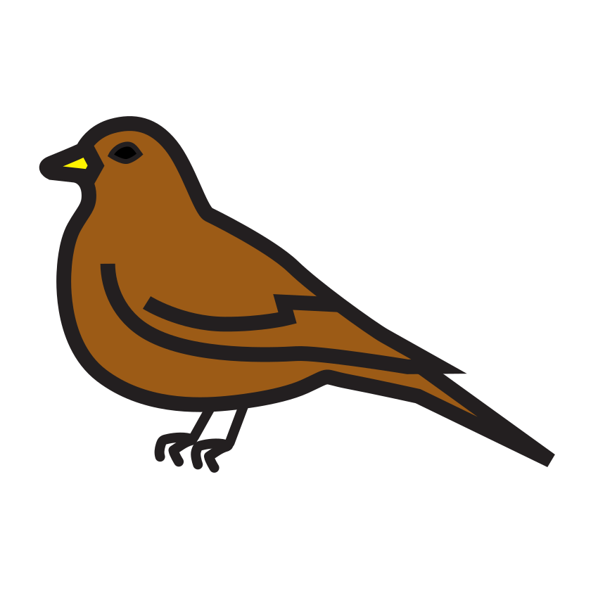

Prénom : Date :
Période 1 · Fiche élève 1
Phonologie — syllabes (éval. 1.3)
Je compte les syllabes
Consigne : Frappe les syllabes dans tes mains, puis dessine un rond dans la case pour chaque syllabe.

vélo

pigeon
★ Défi : frappe et compte les syllabes de HÉLICOPTÈRE et de VÉTÉRINAIRE , puis écris le nombre en chiffre :
Compétence : scander et dénombrer les syllabes d’un mot.A ☐ · EC ☐ · NE ☐
Prénom : Date :
Période 1 · Fiche élève 2
Lettres et écriture (éval. 1.4 / 1.5)
Les lettres de la ville
Consigne : 1. Entoure toutes les lettres de ton prénom dans la grille. 2. Copie les mots en lettres capitales, puis écris ton prénom.
1J’entoure les lettres de mon prénom.
| A | L | E | M | O | R | I | S | T | U | N | C | P |
| B | J | H | É | D | Y | F | G | K | V | W | X | Z |
| a | l | e | m | o | r | i | s | t | u | n | c | p |
2Je copie en capitales, puis j’écris mon prénom.
Mon prénom :
Compétences : reconnaître les lettres capitales ; copier des mots ; écrire son prénom.A ☐ · EC ☐ · NE ☐
Prénom : Date :
Période 1 · Fiche élève 3
Mathématiques — quantités (éval. 1.7)
Je compte les animaux de la ville
Consigne : 1. Compte les animaux et écris le chiffre dans la case. 2. Relie chaque dé au bon chiffre.
1Je compte et j’écris le chiffre.
2Je relie chaque dé au bon chiffre.
★ Défi : compte les moineaux et écris le nombre :

Compétences : dénombrer jusqu’à 6 ; associer quantité, constellation et écriture chiffrée.A ☐ · EC ☐ · NE ☐
Prénom : Date :
Période 1 · Fiche élève 5
Mathématiques — formes planes (éval. 1.9)
Les formes des façades
Consigne : Colorie les carrés en rouge, les rectangles en bleu, les triangles en vert et les disques en jaune. Attention, certaines formes sont penchées !
Compétence : reconnaître carré, rectangle, triangle, disque dans toutes les orientations.A ☐ · EC ☐ · NE ☐
Prénom : Date :
Période 1 · Fiche élève 6
Mathématiques — motifs organisés (éval. 1.10)
Je continue les guirlandes de la ville
Consigne : Regarde bien chaque guirlande. Dessine et colorie ce qui vient ensuite dans les cases vides.
2J’invente ma guirlande : je dessine mon propre motif qui se répète.
Compétence : reproduire, prolonger et créer un motif répétitif (AB, AAB).A ☐ · EC ☐ · NE ☐
Crédits des images
Les illustrations de ce cahier sont des pictogrammes Mulberry Symbols (Paxtoncrafts Charitable Trust, licence CC BY-SA 4.0, mulberrysymbols.org) et des pictogrammes ARASAAC (auteur : Sergio Palao, propriété du Gouvernement d’Aragon, Espagne, licence CC BY-NC-SA, arasaac.org). Merci à leurs auteurs et autrices.